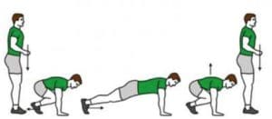
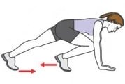
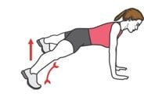
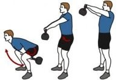
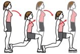
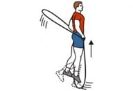
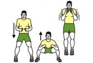
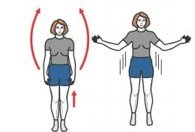
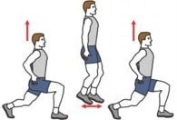
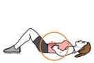

Pourquoi bouger ?
Faire de l’activité physique et rester moins longtemps assis(e) ou allongé(e), n'est pas simplement une méthode pour perdre du poids mais aussi pour mettre toutes les chances de son côté pour améliorer sa qualité de vie, son sommeil et, à plus long terme, réduire le risque de maladies.
L'activité physique régulière permet d’améliorer la condition physique. La condition physique regroupe des qualités physiques comme l’endurance, la force, la vitesse, la souplesse et l’équilibre. Une bonne condition physique permet de réaliser les activités de la vie quotidienne sans fatigue excessive et est nécessaire pour la pratique d'un sport.
Bouger pour maigrir vite
Pratiquer un sport
la méthode la plus efficace et rapide pour avoir un style physique parfait et améliorer la condition physique est de choisir un sport a pratiquer réguliérement.
Pratiquement, la majorité des sports consistent à bouger et donc perdre du gras . en effet, une simple marche de 30 à 60 minutes par jour est suffisantes pour maigrir mais selon vos objectifs vous pouvez choisir le meilleur spoet qui vous convient :
Bouger à domicile
vous manquez de temp ? vous ne pouvez pas sortir pour faire du sport ou vous n'avait pas le courage ?
vous pouvez tout simplement pratiquer pas mal d'activité sportif de chez vous sans acheter de matérielle et sans sortir . Donc pas d'excuse pour perdre du poids, c'est à vous de choisir.
Les meilleurs exercices pour perdre du poids à domicile
Nous avons sélectionné ici 10 exercices pour maigrir à domicile et sans matériel. Afin de pouvoir être réalisés en appartement sans déranger le voisinage, les 5 premiers mouvements n’intègrent pas de sauts. Ils seront également profitables aux personnes en surpoids afin de préserver leur dos et leurs articulations (chevilles, genoux).
1. BURPEES SANS SAUT
Si vous deviez choisir un seul exercice pour maigrir, optez pour les burpees ! Très complet, le burpee est un exercice incontournable lorsqu’il s’agit de se dépenser. Le principe est simple et l’efficacité redoutable. On retrouve d’ailleurs cet exercice dans la plupart des programmes pour maigrir.
consigne : Commencez debout, accroupissez-vous puis réalisez une extension de jambes vers l’arrière pour vous retrouver en position de pompes, réalisez un bond vers l’avant pour regrouper à nouveaux vos jambes, puis relevez-vous. Ensuite l’exercice pourra être complexifié en posant le torse au sol ou en effectuant un saut en extension lorsque vous vous relevez.
2. MOUNTAIN CLIMBER
Le mountain climber est un exercice efficace pour dépenser des calories tout en renforçant ses jambes et ses abdos.
consigne : Placez-vous au sol comme si vous vouliez effectuer des pompes, puis ramenez alternativement vos genoux vers votre poitrine.
3. PLANK JUMPING JACKS
Mixte entre exercice de gainage (planche) et jumping jack, le plank jumping jacks associe renforcement musculaire des abdominaux et dépense énergétique. Le top pour affiner sa silhouette !
consigne : La position de départ est la même que pour le mountain climber, en position de pompes. L’exercice consiste ensuite à écarter puis à resserrer ses jambes rapidement pour gagner en intensité. A votre convenance, vous pourrez également vous placer en appui sur les coudes, comme si vous réalisiez du gainage abdominal classique.
4. KETTLEBELL SWING
Le Kettlebell swing est un grand classique en CrossFit. Mobilisant de nombreux groupes musculaires, cet exercice est intéressant pour dépenser des calories tout en renforçant les muscles de la chaine postérieure (ischio-jambiers, fessiers, érecteurs du rachis).
Idéalement, cet exercice doit être réalisé avec une kettlebell, toutefois si vous n’êtes pas équipé vous pouvez réaliser ce mouvement avec une bouteille d’eau, un ballon lesté ou un haltère.
consigne : Ecartez vos pieds et fléchissez vos jambes pour basculer le bassin en arrière. Faites passer la kettlebell entre vos jambes puis devant vous à hauteur d’épaule. C’est l’extension de hanche qui permet d’initier le mouvement.
5. FENTES MARCHÉES
Cet exercice est intéressant pour les personnes en surpoids qui souhaitent maigrir puisqu’il mobilise de gros groupes musculaires (énergivores) sans chocs. Les articulations sont donc préservées et on muscle ses cuisses et ses fessiers.
consigne : Réalisez des fentes lentes et contrôlées en ligne droite. Votre genou devra venir frôler le sol. De grand pas mettront l’accent sur les fessiers et les ischio-jambiers, tandis que de plus petits pas solliciteront davantage vos quadriceps.
Là encore, des bouteilles d’eau ou des haltères seront appréciés dans le but d’augmenter l’intensité de cet exercice pour perdre du poids.
6. CORDE À SAUTER
On vous en a déjà parlé, la corde à sauter est un exercice idéal pour maigrir ! C’est donc un accessoire fitness à se procurer lorsque l’on désire s’affiner à la maison. A deux pieds, à cloche-pied, en arrière, à intensité modérée ou élevée… tout est possible !
7. SQUAT SAUTÉ
Le squat est utile pour renforcer ses cuisses et ses fessiers. Cependant, lorsqu’il s’agit de perdre du poids, on opte plutôt pour du jump squat, ou squat sauté. Attention, cet exercice ne vous permettra pas d’affiner uniquement vos cuisses, mais l’ensemble de votre corps.
consigne : faites un squat, suivi d’un saut en extension, et ainsi de suite. Lors de la réception du saut, veillez à amortir la chute. Pour cela, on se réceptionne plutôt sur la pointe des pieds, en fléchissant ses jambes pour repartir directement sur un squat. Ceci permettra de préserver votre dos et vos genoux tout en dépensant un max de calories !
8. JUMPING JACK
Le jumping jack est un exercice simple et efficace pour maigrir, facile à intégrer dans une séance de sport à la maison.
consigne : Démarrez pieds joints, bras le long du corps. L’exercice consiste ensuite à réaliser un premier saut en écartant simultanément les jambes et les bras, puis un second saut en les resserrant. Cet enchaînement peut être répété plus ou moins rapidement durant un temps donné ou un nombre de répétitions. A vous de gérer votre effort selon vos capacités et objectifs.
9. FENTES SAUTÉES
Tous comme l’ensemble des exercices intégrant des sauts, les fentes sautés permettent de dépenser un maximum de calories et ainsi de perdre du poids. Toutefois, cet exercice est déconseillé aux personnes en surpoids afin de préserver dos, genoux et chevilles.
consigne : A partir de la position de fente, effectuez un saut tonique et croisez vos jambes pour vous réceptionner en position de fente mais en ayant changé d’appui. Enchaînez ces sauts plus ou moins rapidement. Vos cuisses chauffent ? C’est normal 😉
10. VACUUM
Le vacuum ne permet pas directement de maigrir. Cependant, il sollicite le muscle transverse, permettant ainsi d’obtenir un ventre plus plat. Ainsi, il nous semble important de l’intégrer à votre programme d’entraînement, notamment en fin de séance.
consigne : Allongez-vous sur le dos. Prenez une grande inspiration tout en rentrant votre ventre. Continuez de respirer calmement par le nez en maintenant votre nombril enfoncé vers le sol. Maintenez la contraction quelques secondes puis relâchez la pression en expirant avant de réaliser sur une nouvelle répétition.